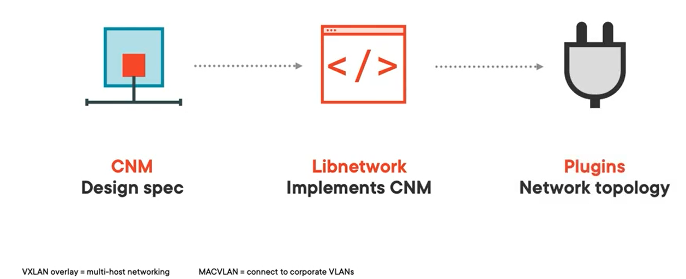

alias docker='podman'
☸️🐋
Stumbled across this tweet today:
I completely forgot that ~2 months ago I set up "alias docker='podman'" and it has been a dream. #nobigfatdaemons @projectatomic
— Alan Moran ☕️💻 (@ialanmoran) May 30, 2018
Seems quite simple and effective, doesn't it? Not exactly. Let's go through some important details, specifically regarding network namespaces that one might miss out.
Background
Container Networking
Useful resources:
- Docker/Podman official documentations
- Nigel Poulton
- Redhat: Podman rootfull vs rootless networking
- Bride-node networking tutorial | Gist
Basics
Components:
- CNM: Container Network Model
Network model tenets:
- Sandbox: network namespace
- Endpoint: IP address
- Network: binds the ip with host It's the same idea as that of Bridge Networking (discussed below)
- Libnetwork
Implementation of the design spec i.e. CNM. This library takes care of setting the net namespace.
RE: Redhat blog listed above, TL;DR:
When using Podman as a rootless user, the network setup is automatic. Technically, the container itself does not have an IP address, because without root privileges, network device association cannot be achieved. Moreover, pinging from a rootless container does not work because it lacks the CAP_NET_RAW security capability that the ping command requires.
Bridge networking
Tools required: ip command
- Create a network namespace with ip command
- Create a veth pair:
veth1andvpeer1 - Push
vpeer1inside the newly created namespace; create loopbackloas well - Assign IP addresses (make sure you use masking) to both of them and set them UP
- Create iptable rule inside the namespace to set up routes to loopback and connects
vpeer1andveth1 - Enable forwarding through
/proc/sys/net/ipv4/ip_forwardand iptables rule b/weth0andveth1
ip command cheatsheet:
$ ip {netns, link, route} show # show resources
# Execute commands inside the namespace with:
$ ip netns exec <namespace_name> <command>
A container is a collection of namespaces. Libnetwork takes care of setting up the net namespace. Plugins set up a topology.
Container Network: 
# list existing network namespaces
$ docker network ls
# create a network namespace
$ docker create network -d bridge brooklyn
# launch and bind this network to an existing container
$ docker run -dit --name nyc --network brooklyn alpine sh
# disconnect this network from the container
$ docker disconnect brooklyn nyc
# connect back with connect instead of disconnect
Inter-container communication for docker can be achieved as above, it doesn't work for the default bridge, only for newly networks the containers will be able to talk to each other.
Podman
There are some limitations with podman. Because of the dnsname plugin's dependency on dnsmasq:
This blog (translated from Japanese) explains it. The fix is to set --disable-dns flag.
Rootless containers need -P to talk through host's networking. Rootfull containers can attach to a user defined bridge and would be able to talk to each other just fine through IP or the container name.